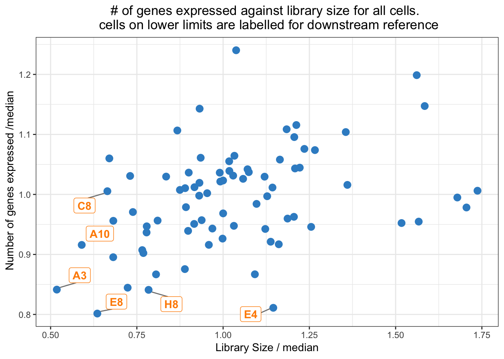
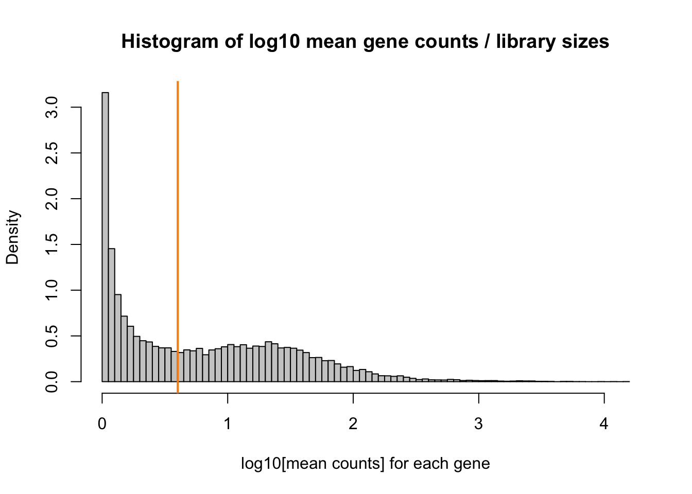
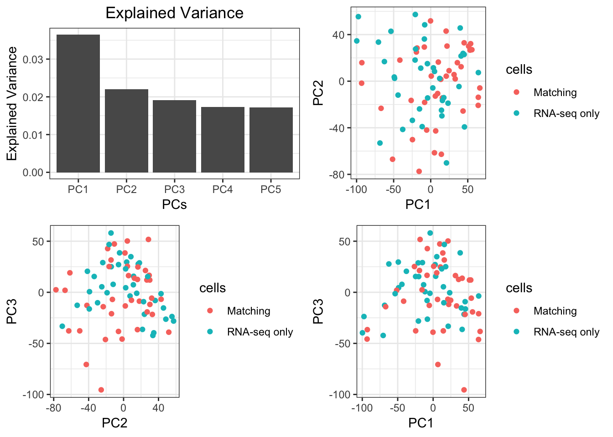
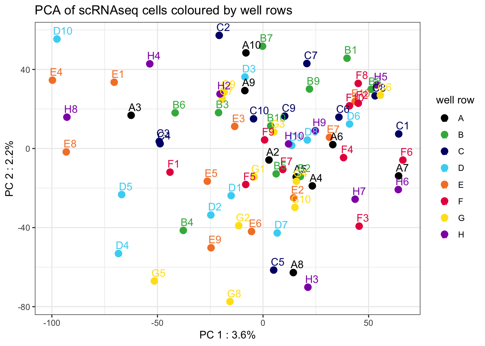
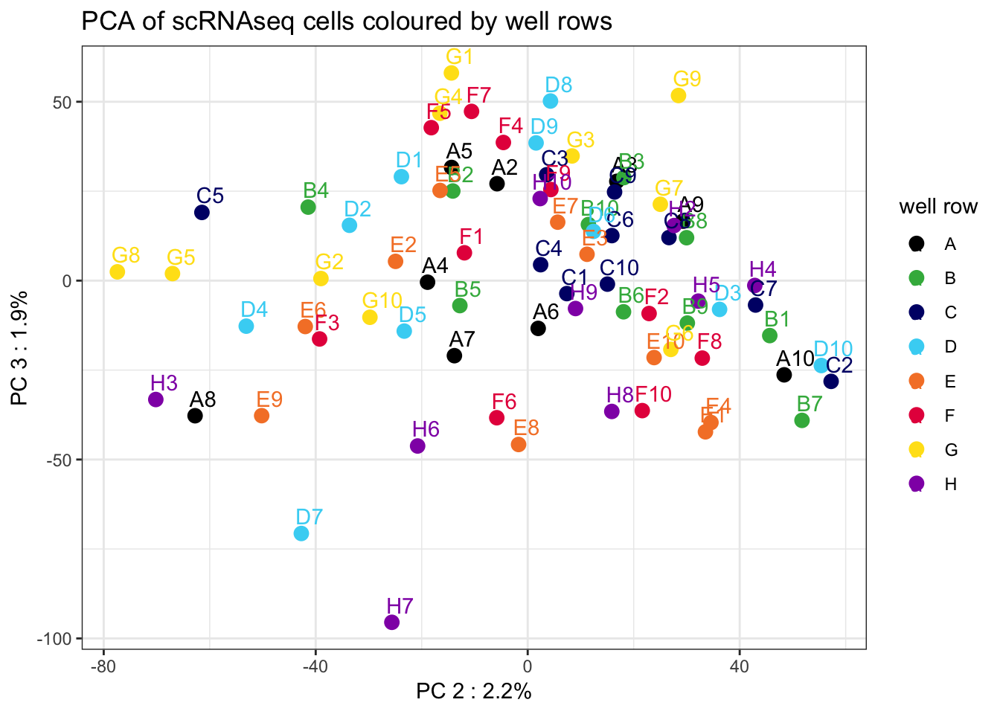
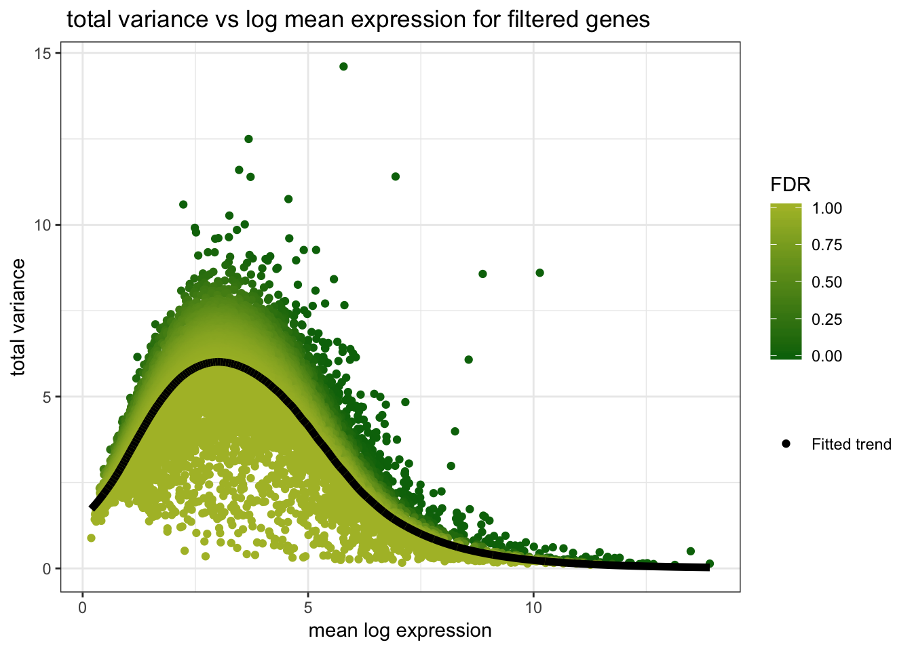
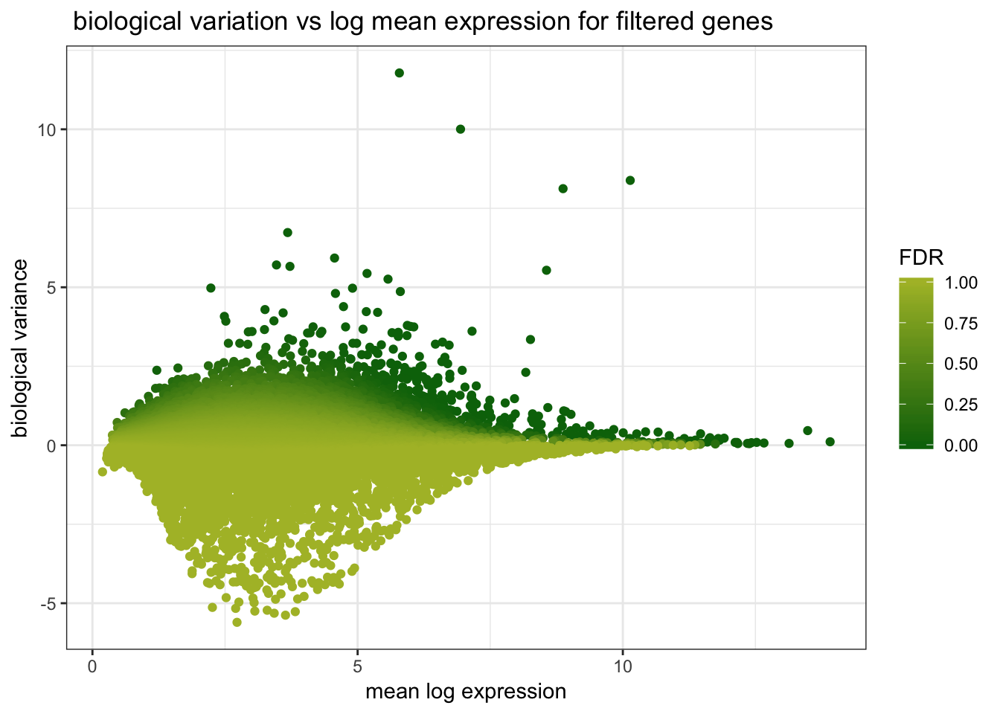
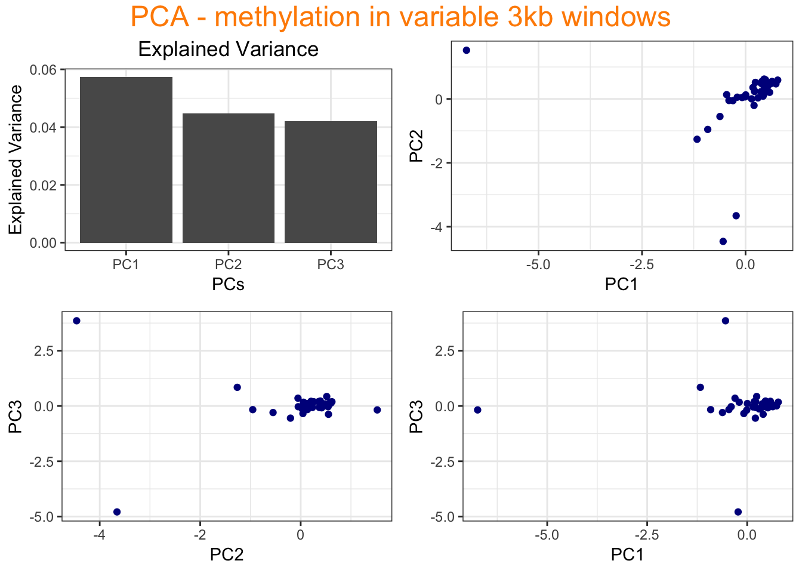
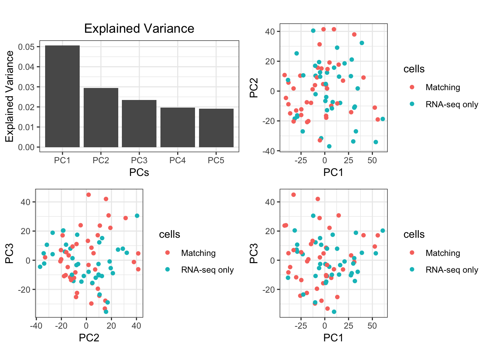

Chapter 1 scRNA-seq Data
## libraries
suppressPackageStartupMessages(library(mixOmics))
suppressPackageStartupMessages(library(SingleCellExperiment))
suppressPackageStartupMessages(library(data.table))
suppressPackageStartupMessages(library(scran))
suppressPackageStartupMessages(library(scater))
suppressPackageStartupMessages(library(Rtsne))
suppressPackageStartupMessages(library(ggplot2)); theme_set(theme_bw())
suppressPackageStartupMessages(library(ggrepel))
suppressPackageStartupMessages(library(gridExtra))
suppressPackageStartupMessages(library(grid))
suppressPackageStartupMessages(library(reshape2))
suppressPackageStartupMessages(library(umap))
suppressPackageStartupMessages(library(magrittr))1.1 Load Raw Data
# system.time({
## user system elapsed
## 1.025 0.068 1.152
## read raw scRNAseq counts
counts.raw = read.csv(params$rna_file)
## create rownames using the first column
rownames(counts.raw) = counts.raw[,1]
## remove the 'id' column
counts.raw = counts.raw[,-1]
head(colnames(counts.raw))
## change the cell names based on well names
colnames(counts.raw) = name.cells.by.wells(colnames(counts.raw), pos.in.string = 'middle')
head(colnames(counts.raw))
## create sce object from raw counts
rna.sce = SingleCellExperiment(assays = list(counts = as.matrix(counts.raw)))
rna.sce.match = rna.sce[,met.cellnames] ## matching cells
# })1.2 Preprocessing
1.2.1 QC metrics
## add QC metrics
rna.sce = scater::calculateQCMetrics(rna.sce)1.2.1.1 cell QC
look at the histograms of library sizes and the number of genes expressed by each cell:
## look at the histograms of lib. sizes and the number of genes expressed by each cell
par(mfrow=c(1,2))
hist(rna.sce$total_counts/1e6, xlab='Library sizes (millions)', main='',
breaks=20, col='grey80', ylab='Number of cells')
hist(rna.sce$total_features_by_counts, xlab='Number of expressed genes', main='',
breaks=20, col='grey80', ylab='Number of cells')
Create a list of cell QC metrics:
## keep a record of lower limit cells
cell.qc = list()
## qc metric based on lib size
tot.counts = rna.sce$total_counts
names(tot.counts) = colnames(rna.sce)
tot.counts = tot.counts[order(tot.counts)] ## from least to most
libsize = list()
libsize$rank = rank(tot.counts)
libsize$ratio2median = tot.counts/median(tot.counts)
cell.qc$libsize = libsize
## qc metric based on gene expression
genes.expressed.ratio2median = rna.sce$total_features_by_counts/median(rna.sce$total_features_by_counts)
names(genes.expressed.ratio2median) = colnames(rna.sce)
genes.expressed.ratio2median %>% .[order(.)] ## from least to most
cell.qc$gene.expressed.ratio2median = genes.expressed.ratio2medianWhich cells are more than 3.5 median absolute deviations less than the median log library size / number of genes expressed?:
libsize.drop <- isOutlier(rna.sce$total_counts, nmads=3.5, type='lower', log=TRUE)
colnames(rna.sce)[libsize.drop] ## the cells with low library size
feature.drop <- isOutlier(rna.sce$total_features_by_counts, nmads=3.5, type='lower', log=TRUE)
colnames(rna.sce)[feature.drop] ## the cells with low number of expressed genes > NULLFor each cell, we look at number of genes expressed vs library size (ratio to the median for both):
## cells
df4ggplot = data.frame(libsize = libsize$ratio2median,
genes.expressed = genes.expressed.ratio2median[names(libsize$ratio2median)])
## keep a record of lower quality cells for future reference
rank.threshold = 5 ## the rank threshold on library size and gene expression
df4ggplot$lower.quality = with(df4ggplot, rank(libsize)<rank.threshold |
rank(genes.expressed)<rank.threshold)
ggplot(df4ggplot, aes(x = libsize, y = genes.expressed)) +
geom_point(size = 3, col=color.mixo(1)) +
labs(x = 'Library Size / median' , y=' Number of genes expressed /median', title = '# of genes expressed against library size for all cells. \n cells on lower limits are labelled for downstream reference') +
theme(plot.title = element_text(hjust = 0.5)) +
geom_label_repel(
aes(label = ifelse(lower.quality,rownames(df4ggplot),'')),
col = 'darkorange',
fontface = 'bold',
box.padding = unit(0.35, 'lines'),
point.padding = unit(0.5, 'lines'),
segment.color = 'grey50'
)
No cells are filtered at this stage. We will assess A3 and E8 further downstream.
1.2.1.2 gene filtering
We require genes to have: + non-zero library size + be expressed/detected in at least 5% of cells
gene.metrics = as.data.frame(rowData(rna.sce)) ## a data.frame of gene metrics
gene.metrics$pass <- gene.metrics$total_counts!=0 & gene.metrics$pct_dropout_by_counts<params$max.cell.dropout*100
sum(gene.metrics$pass) ## number of genes after this filter: 15KTo also filter out noisy genes with high rate of dropouts, we usually look at the library size histogram and put a threshold between the two peaks to the left of where the fitted curve plateaues (Lun, McCarthy, and Marioni 2018).
## choose a min log lib size threshold
min.libsize = log10(4) ## must be chosen based on the following hisogram
## look at only those which passed total lib size filtering and cell dropout filtering
log.mean.counts = gene.metrics$log10_mean_counts
## see if you're filtering the first peak of non-zero values
hist = hist(log.mean.counts[log.mean.counts>0], prob=TRUE, breaks = 100, col = 'grey80',
main= 'Histogram of log10 mean gene counts / library sizes', xlab = 'log10[mean counts] for each gene')
abline(v = min.libsize, col = 'darkorange', lwd=2)
Based on the histogam above, 0.60206 is chosen as minimum gene library size.
gene.metrics$pass[gene.metrics$pass] <- gene.metrics$log10_mean_counts[
gene.metrics$pass]>=params$min.gene.libsize
sum(gene.metrics$pass) ## number of genes after this filter: 10.7Krna_qc = rna.sce[gene.metrics$pass,] ## filter genesdim(rna_qc) ## 10778 781.3 Normalisation
1.3.1 scran
## use scran to pool cells based on gene expression similarity and calculate size factors
system.time({
## user system elapsed
## 0.366 0.027 0.435
rna_qc = computeSumFactors(rna_qc)
## normalise using calculated size factors
rna_qc = normalize(rna_qc)
})## size factors summary
# summary(sizeFactors(rna_qc))
plot(sizeFactors(rna_qc), rna_qc$total_counts/1e3, log='xy', pch=16, col='purple',
ylab='Library size (thousands)', xlab='Size factor', main = 'Scran Size Factors')Figure 1.1: Size factors from deconvolution, plotted against library sizes for all cells. Axes are shown on a log-scale. Since we have similar cell types (and not much DE genes) we expect to see less scatter around the trend line, whcih is the case in this plot.
1.4 Dimension reduction - filtered genes
1.4.1 PCA
## scran
pca.res = pca(t(logcounts(rna_qc)), ncomp = 5)rnaseq.only = colnames(rna_qc)[! colnames(rna_qc) %in% met.cellnames]
pca.grid(pca.obj = pca.res, diff.samples = rnaseq.only)
## invesigating whether there are technical effects by wells:
source('utils/pca.well.R')
pca.well(pca.res, PCs=c(1,2))
pca.well(pca.res, PCs=c(2,3))
There does not seems to be a grouping by well rows from PCA plots.
1.4.2 Variation
Since there are technical factors that can affect capture efficiency (such as GC content for Illumina sequencing, PCR amplification noise etc), for the studies that use HVGs, we need to ensure that are gene selection is based on biological variance.
1.4.2.1 variance decomposition method
By fitting a mean-depndent loess curve to variance - log expression (which makes it more robust to outliers).
The fitted value of this trend represents technical variability due to sequencing, drop-outs during capture, etc. at a given mean.
1.4.2.3 decompose variance
## function to decompose variance for sce and return results as rowData(sce)
var.decomp = function(sce=rna_qc){
fit <- trendVar(sce, method='loess', use.spikes=FALSE) ## fit a mean-dependent loess to variance
decomp <- as.data.frame(decomposeVar(sce, fit)) ## decompose variance to technical and biological
decomp$trend.var <- fit$trend(fit$means) ## add the fitted variance column
rowData(sce) %<>% cbind(.,decomp) ## add to rowData(sce)
sce %<>% .[order(-rowData(.)$bio),] ## order by bio variance
return(sce)
}## decompose variance
rna_qc %<>% var.decomp(.)par(mfrow=c(1,2))
row_data = rna_qc %>% rowData() %>% as.data.frame() ## a data.frame of rowData
## total variance (fold change compared to mean) vs log mean
ggplot(row_data) + geom_point(aes(x= mean, y=total, col = FDR), show.legend = TRUE) +
scale_colour_gradientn(colors = c('#027009', '#aebc31'), name = 'FDR') +
geom_line(aes(x=mean, y = trend.var, fill = 'Fitted trend'), size=2) +
scale_fill_manual('', values = c(6), guide=guide_legend(override.aes = list(color=c('black')))) +
labs(x='mean log expression', y = 'total variance', title = ' total variance vs log mean expression for filtered genes')
## inferred biological variance (fold change compared to mean) vs log mean
ggplot(row_data) + geom_point(aes(x= mean, y=bio, col=FDR), show.legend = TRUE) +
scale_colour_gradientn(colors = c('#027009', '#aebc31'), name = 'FDR') +
labs(x='mean log expression', y = 'biological variance',
title = ' biological variation vs log mean expression for filtered genes')
1.4.2.3.1 Pearson’s r
## hierarchical clustering using HVGs
hvgs = rownames(rna_qc[1:params$rna.78cells.hvgs,])
plotHeatmap(rna_qc[hvgs,], features = hvgs, clutering_distance_rows = 'correlation', clutering_distance_cols = 'correlation', main = paste0( 'Clustered heatmap of scRNAseq data with ',params$rna.78cells.hvgs, ' HVGs only \n using Pearson correlation \n cells at the bottom and genes on the side'))
1.5 Dimension reduction - HVGs
1.5.1 PCA using HVGS
The first 2 PCs now contain ~ 13% of variation, compared to 5% which was before
pca.hvgs.res = pca(t(logcounts(rna_qc[hvgs,])), ncomp = 5)pca.grid(pca.obj = pca.hvgs.res, diff.samples = rnaseq.only)
1.5.2 tSNE does not identify clear clusters
par(mfrow=c(1,2))
set.seed(12321)
sce.hvg.tsne = Rtsne(t(logcounts(rna_qc[hvgs,])), perplexity = 10)plot(sce.hvg.tsne$Y, main = 'tSNE - Perplexity = 10', pch=colnames(rna_qc),
col=factor(substr(colnames(rna_qc),0,1)), xlab = 'tSNE-1', ylab='tSNE-2')Figure 1.2: tSNE plots using HVGs
1.5.3 UMAP does not identify clear clusters
## UMAP on scran-normalised
sce.hvg.umap = umap(t(logcounts(rna_qc[hvgs,])))plot(sce.hvg.umap$layout, main = 'UMAP using HVGs', pch=rownames(sce.hvg.umap$layout),
col=factor(substr(rownames(sce.hvg.umap$layout),0,1)), xlab = 'umap-1', ylab='umap-2' )Figure 1.3: UMAP plot using HVGs colored by wells